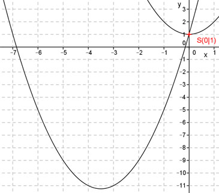

Aufgabe 50 In welchen Punkten schneiden sich die Parabel y = x2 + 7x + 1 und die Parabel y = x2 + 1? Gleichsetzen: x2 + 7x + 1 = x2 + 1 | -x² 7x + 1 = 1 |-1 7x = 0 |-7 x = 0 Eingesetzt: y = (0)2 + 1 = 1 Schnittpunkt S(0|1) 